Valores universales
Lo que nos hace personas en cualquier calle del mundo.
Responsabilidad y convivencia
Educador vial
Más de 30 años enseñando a compartir la calle jugando: peatones, pasajeros y conductores.
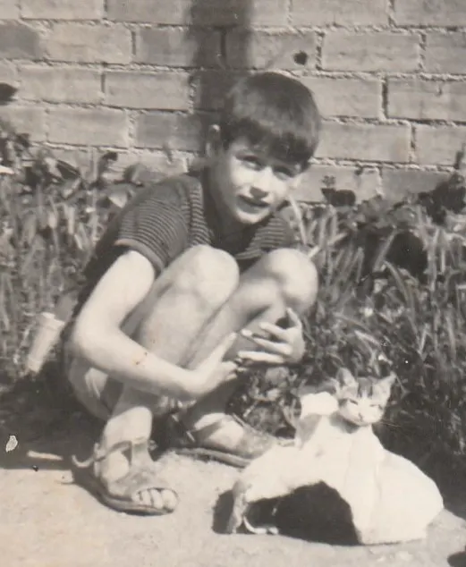
Salida
Bienservida, Albacete
Jugando al fútbol en la calle, el único que levantaba la mirada y gritaba «¡Cuidado, que pasa una señora!» era yo. Las vecinas se lo decían a mi madre: «Qué chiquillo más atento tienes».
«Diseñábamos juegos educativos para niños y niñas de 6 a 14 años.»
12 años
Badalona
Con 12 años llegué a Badalona, la ciudad que siento como propia. Fui monitor de un esplai en la parroquia del barrio. Y ya entonces avisaba a mis amigos: ese ciclomotor era un riesgo.
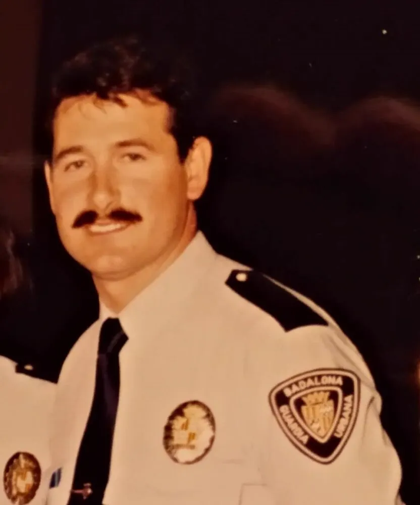
1980
Guardia Urbana de Badalona
Con 22 años entré en la Guardia Urbana. Aquel agosto, a las cinco de la mañana, tuve que dar a una familia una noticia que cambió mi forma de valorar la vida y mi trabajo.
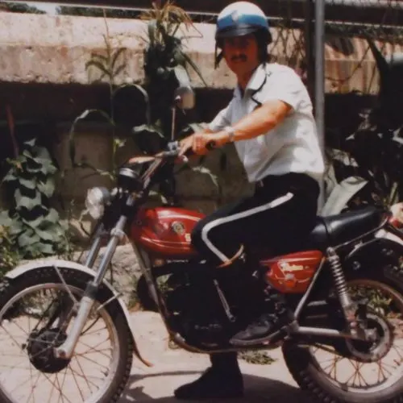
1980-1989
Unidad de motoristas
Diez años de motorista. Me ponía a regular el cruce antes de que se formara el atasco, y en un lugar visible para que nadie hiciera el giro peligroso. Sin infracción, no hay accidente.
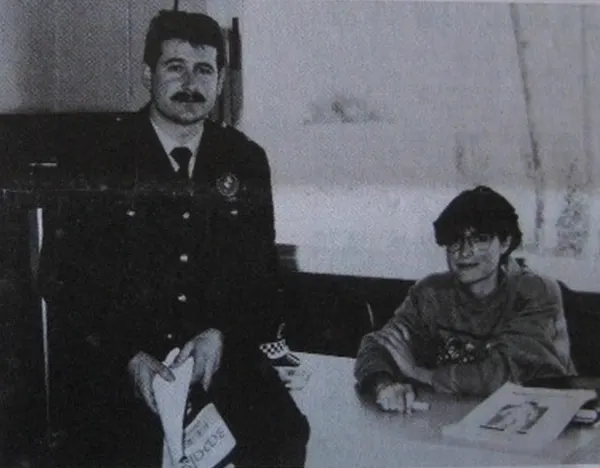
1989
Servicio de colegios
Me ofrecieron ir a los colegios. El material: diapositivas de señales y de guardias de Madrid con salacot. La educación vial para una movilidad segura, tal como hoy la conocemos, no existía.
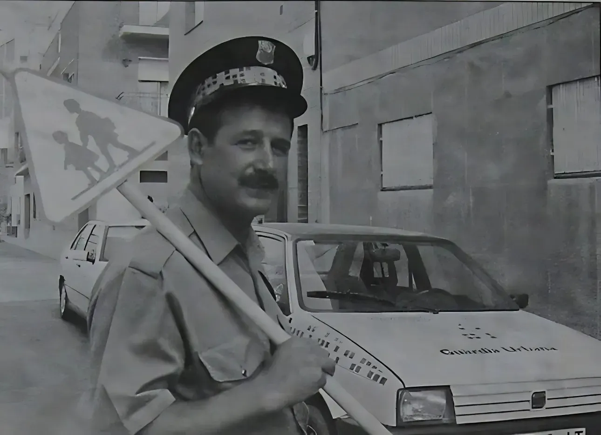
1990
Badalona 2000
Con Alicia Palacios y el Institut Municipal d'Educació rehicimos el programa: menos charla pasiva, más juego, y la educación vial dentro del proyecto educativo de cada escuela.
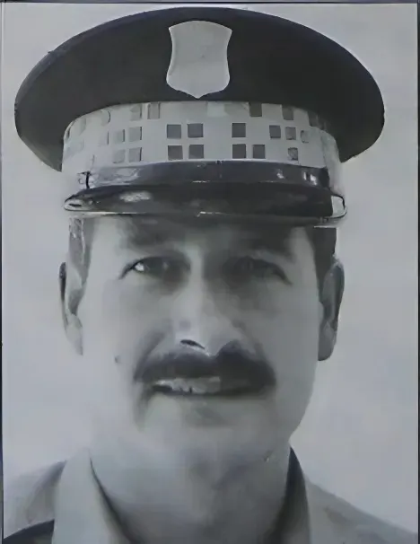
7.199
El Punt
En 1998, en 60 centros de Badalona. «Me ha costado dos años vencer la tentación de pasar un semáforo en rojo. Cumplir las normas es ir a contracorriente.»
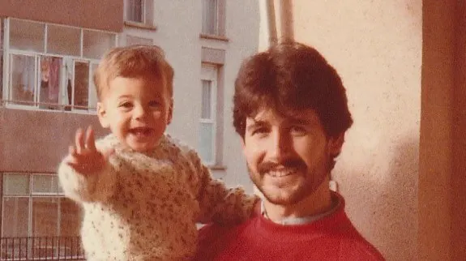
Padre
En casa
Dos hijos en casa y miles en las aulas. Cada año, además, un encuentro con las 300 o 400 personas que, como mis padres, emigraron de Bienservida a Badalona.
Hoy
Meta
30 años diseñando juegos, actividades, programas y proyectos educativos. Siempre en equipo, y siempre con la misma idea: cada uno de nosotros es responsable de su ejemplo.
La Dirección General de Tráfico hablaba de educar a los conductores del mañana. Yo pensaba, y sigo pensando, que la educación vial es el medio para educarnos todos: peatones, pasajeros o conductores, personas que compartimos la calle.
José María NavarroLo que nos hace personas en cualquier calle del mundo.
Responsabilidad y convivencia
La calle es el primer espacio público que compartimos.
Igualdad y libertad
Anticiparse al riesgo antes de que haya que lamentarlo.
Prevención y autoprotección
Tira el dado y avanza. En cada casilla de color, una pregunta: si aciertas, sigues; si fallas, aprendes por qué. De paso de cebra a paso de cebra, y tiro porque me lleva la corriente.
Lo que contaron de su trabajo los periódicos de Badalona y Cataluña.
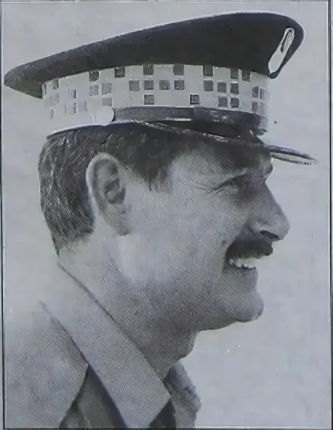
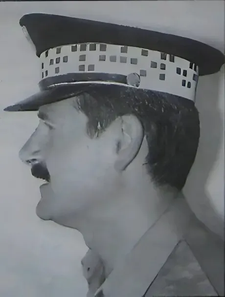
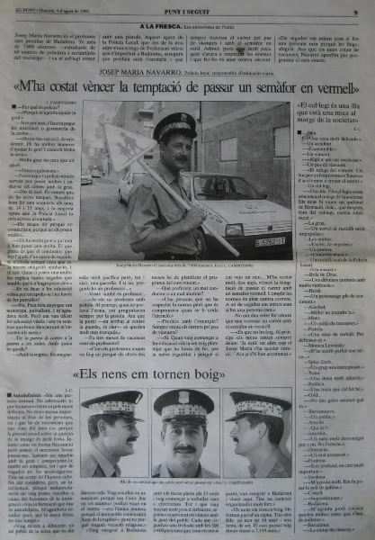
Me ha costado vencer la tentación de pasar un semáforo en rojo.Leer la entrevista
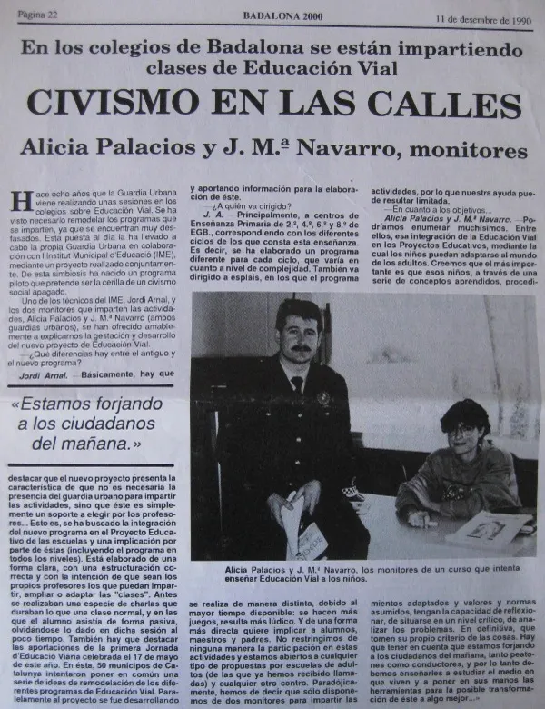
Estamos forjando a los ciudadanos del mañana.Leer la entrevista
Charlas en colegios y esplais, formación para docentes, proyectos con ayuntamientos o una simple pregunta. Escríbeme.
info@soyjosemarianavarro.com